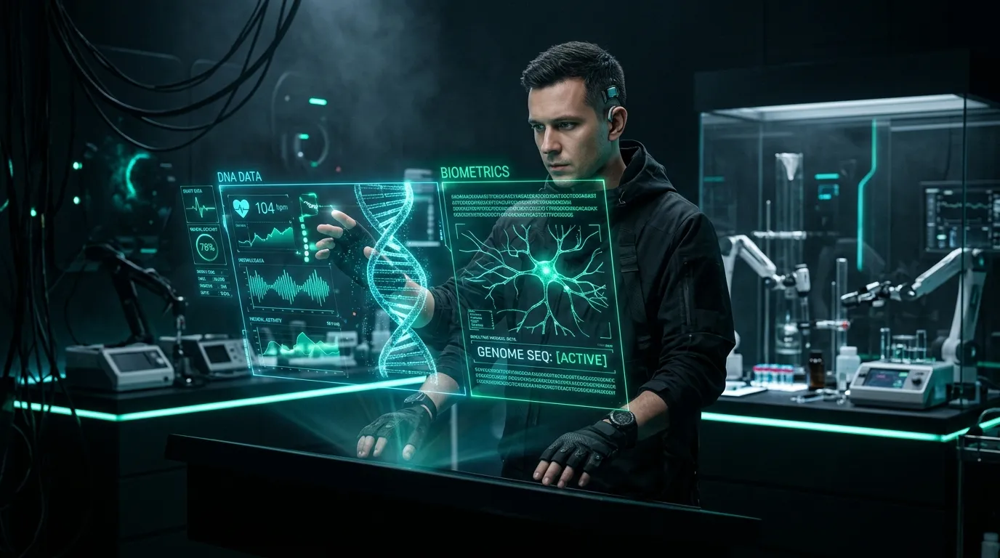

Zaawansowana inżynieria ludzkiej wydajności. Integrujemy analizę metylacji DNA, regenerację mitochondrialną i precyzyjną fotobiomodulację, aby odblokować peak performance Twojego ciała i umysłu.
Średnia redukcja bio-wieku
Wzrost syntezy ATP w komórkach
Kliniczna trafność markerów
